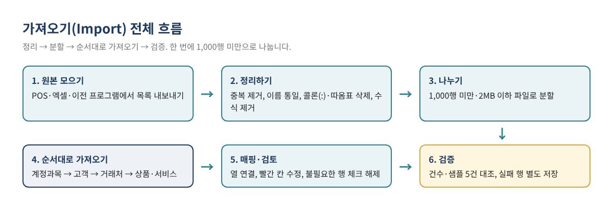
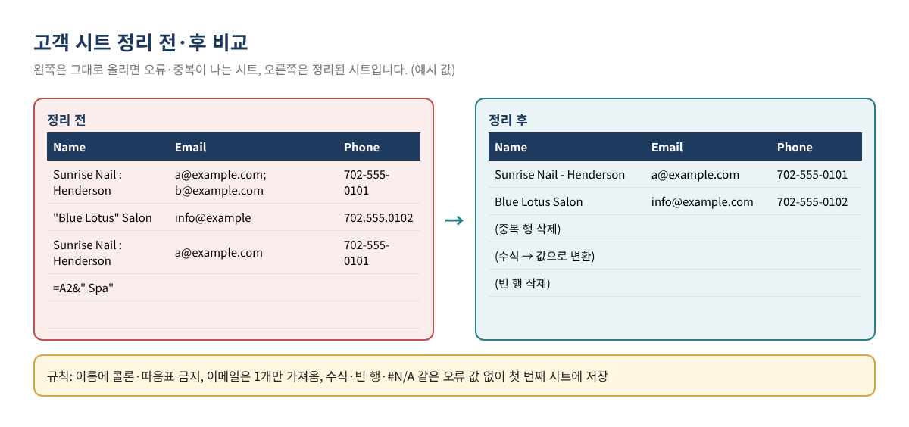
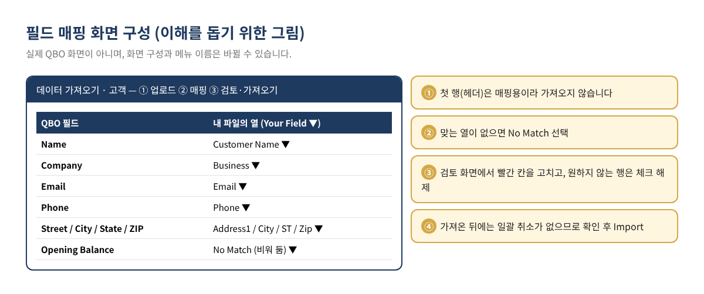
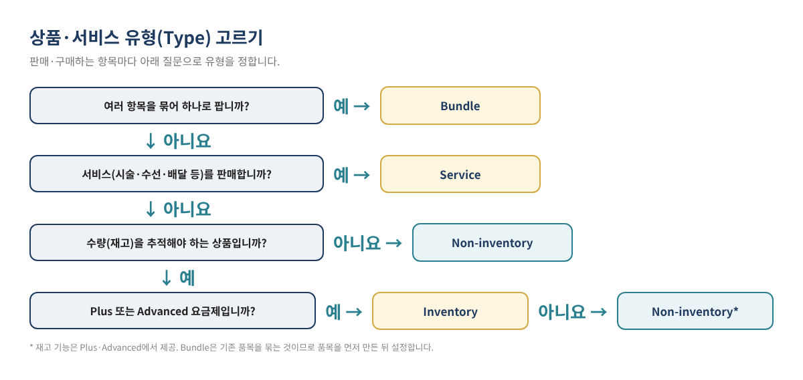

QBO 고객·거래처·상품 목록, 엑셀로 한 번에 가져오기: 중복과 오류 없이 Import하는 법
QuickBooks Online(이하 QBO)을 새로 시작하면 가장 먼저 부딪히는 일이 목록 입력입니다. 단골 살롱 수백 곳, 물건을 대 주는 거래처 수십 곳, 매장에서 파는 상품 수백 개를 한 건씩 손으로 넣다 보면 며칠이 걸리고, 오타와 중복이 쌓입니다. QBO에는 엑셀·CSV·Google Sheets 파일로 목록을 한꺼번에 올리는 가져오기(Import) 기능이 있지만, 파일을 정리하지 않고 올리면 오류가 나거나 같은 이름이 두 번 들어가고, 한번 들어간 목록은 일괄 취소가 되지 않습니다.
이 글은 QBO 기초 시리즈 3편입니다. 1편(기초 잔액과 Chart of Accounts 세팅)과 2편(업종별 Chart of Accounts 예시)에서 계정과목을 먼저 정리했다면, 이번에는 그 위에 고객(Customers)·거래처(Vendors)·상품과 서비스(Products and Services) 목록을 실수 없이 가져오는 방법을 파일 준비부터 검증까지 단계별로 정리합니다.
이런 분께 필요합니다: POS나 엑셀에 고객·거래처·상품 목록이 이미 있는 분 / QuickBooks Desktop이나 다른 프로그램에서 QBO로 옮기는 분 / 가져오기를 해 봤다가 오류 메시지나 중복 이름 때문에 멈춘 분 / 상품 수가 많아 한 건씩 입력하기 어려운 리테일·뷰티 서플라이·식당 사장님.
1. 가져오기 전에 알아 둘 기본 규칙
Intuit 도움말에 나온 규칙을 먼저 정리하면 아래와 같습니다. 이 규칙만 지켜도 오류의 대부분을 미리 막을 수 있습니다.
| 항목 | 규칙 | 실무 팁 |
|---|---|---|
| 파일 형식 | CSV, Excel(.XLS/.XLSX), Google Sheets. 고객·거래처는 Outlook·Gmail에서 내보낸 CSV도 가능 | 가장 문제가 적은 것은 CSV 또는 .XLSX |
| 한 번에 올릴 수 있는 양 | 고객·거래처: 파일당 2MB 또는 1,000행까지 / 상품·서비스: 한 번에 1,000행까지 (도움말에 따라 '1,000행 미만'으로도 표기) | 여유 있게 900행 정도씩 나눠 올리기 |
| 첫 행 | 첫 행은 열 이름(헤더)으로 쓰이고 가져오지 않음 | 헤더가 없으면 첫 고객 한 명이 빠짐 |
| 시트 | 데이터는 통합 문서의 첫 번째 시트에 | 여러 시트는 각각 별도 파일로 저장 |
| 금지 사항 | 수식, 차트, 빈 행, #REF!·#N/A 같은 오류 값 | '값으로 붙여넣기'로 수식 제거 |
| 이름 | 고객·거래처·직원 목록 전체에서 이름이 겹치면 안 됨. 콜론(:)과 따옴표(") 사용 불가 | 같은 회사가 고객이자 거래처면 한쪽 이름에 구분 표시 |
| 취소 | 가져온 연락처는 일괄 취소·일괄 삭제 기능이 없고, 상품 목록도 가져온 뒤 되돌릴 수 없음 | 올리기 전 검토 화면에서 꼼꼼히 확인 |
가져오는 순서도 중요합니다. Intuit은 목록을 먼저, 거래를 나중에 가져오도록 안내하며, 목록 중에서는 Chart of Accounts → 고객 → 거래처 → 직원 → Class → Location → 상품과 서비스 순서를 제시합니다. 상품을 가져올 때 매출 계정(Income account)을 연결해야 하므로, 계정과목이 먼저 정리되어 있어야 합니다.

2. 1단계: 원본 목록 모으고 정리하기
POS, 이전 회계 프로그램, 엑셀 장부 등에서 고객·거래처·상품 목록을 각각 내보낸 뒤, 아래 순서로 정리합니다.
- 원본은 그대로 보관합니다. 정리용 사본을 만들어 작업하고, 파일 이름에 날짜를 붙입니다(예: customers_clean_v1).
- 중복을 지웁니다. 이름 열을 기준으로 정렬하면 'Sunrise Nail'과 'Sunrise Nail Spa'처럼 비슷한 이름이 나란히 보입니다. 같은 고객이면 하나로 합칩니다.
- 이름 규칙을 정합니다. 회사명 기준으로 쓸지, '매장명 - 지역' 형식으로 쓸지 정해 통일합니다. 콜론(:)과 따옴표(")는 하이픈(-) 등으로 바꿉니다.
- 고객과 거래처에 동시에 있는 이름을 찾습니다. 세 목록(고객·거래처·직원)에서 이름이 겹치면 가져오기가 되지 않으므로, 거래처 쪽에 ' (V)'처럼 구분 표시를 붙입니다.
- 이메일은 한 칸에 하나만 남깁니다. 연락처 가져오기는 이메일을 하나만 가져옵니다.
- 수식과 빈 행을 없앱니다. 전체 복사 후 '값으로 붙여넣기'를 하고, 중간의 빈 행과 합계 행을 지웁니다.
- 쓰지 않는 열은 지우거나 그대로 둡니다. QBO가 매핑할 수 없는 열은 가져오지 않으므로, 혼란을 줄이려면 미리 지우는 편이 낫습니다.

고객 시트 예시
아래는 정리가 끝난 고객 시트의 예입니다. 열 이름은 자유롭게 써도 매핑 단계에서 QBO 필드와 연결할 수 있지만, QBO 필드 이름과 비슷하게 맞춰 두면 매핑이 빨라집니다.
| Name | Company | Phone | Street | City | State | ZIP | |
|---|---|---|---|---|---|---|---|
| Sunrise Nail - Henderson | Sunrise Nail LLC | a@example.com | 702-555-0101 | 100 Sample Ave | Henderson | NV | 89000 |
| Blue Lotus Salon | Blue Lotus Inc | info@example.com | 702-555-0102 | 200 Test Blvd | Las Vegas | NV | 89100 |
| Golden Supply | Golden Supply Co | sales@example.com | 213-555-0103 | 300 Demo St | Los Angeles | CA | 90000 |
| 예시 값 / Sample values — 가상의 이름과 주소입니다 |
Intuit이 안내하는 필드별 글자 수 제한은 이름 100자, 회사명 50자, 이메일 100자, 전화번호 21자, ZIP 30자 등입니다. 주소는 청구지 주소(Billing address)로 들어가고, 나라 칸을 비우면 회사의 기본 국가로 채워집니다.
3. 2단계: 파일 나누기
행 수가 많으면 파일을 나눕니다. 고객·거래처는 파일당 2MB 또는 1,000행, 상품·서비스는 1,000행이 한도이므로 900행 안팎으로 나누면 안전합니다. 나눌 때는 이름 알파벳 순으로 정렬한 뒤 A~K, L~Z처럼 자르면, 나중에 어느 파일까지 올렸는지 확인하기 쉽습니다. 모든 파일의 첫 행에는 같은 헤더를 넣어야 합니다.
4. 3단계: 고객과 거래처 가져오기
- 오른쪽 위 Settings(⚙)에서 Import data를 선택합니다. (검색창에 'Import data'를 입력해도 됩니다.) 고객은 Customer Hub의 고객 목록 화면에서 New customer ▼ → Import customers로 들어갈 수도 있습니다.
- Customers(또는 Vendors)를 고릅니다.
- Browse로 파일을 올리거나, Google Sheets라면 Connect로 구글 계정에 연결합니다. Next를 누릅니다.
- 매핑 화면에서 QBO 필드마다 오른쪽 Your Field의 ▼를 눌러 내 파일의 열을 고릅니다. 맞는 열이 없으면 No Match를 선택합니다.
- 검토 화면에서 빨갛게 표시된 칸을 고치고, 가져오지 않을 행은 체크를 해제합니다. 여기서 고친 내용은 원본 파일에는 반영되지 않습니다.
- 건수를 확인한 뒤 Import를 누릅니다.

거래처 가져오기에서 다른 점
거래처는 고객과 같은 화면에서 Vendors만 바꿔 진행합니다. Intuit의 필드 안내에는 거래처의 세금 식별 번호(Tax ID, 20자)와 Report basis(cash 또는 accrual, 비우면 cash) 같은 거래처 전용 필드가 있고, 고객에는 재판매 번호(Resale Number, 16자) 필드가 있습니다. 공개 블로그 글이나 공유 파일에 실제 세금 번호를 적지 않도록 주의하고, 세금 번호는 가져오기 후 각 거래처 화면에서 직접 입력하는 방법도 있습니다. 1099 대상 거래처 설정은 이 필드 목록에 없으므로 가져온 뒤 거래처별로 확인합니다(연말 1099 준비는 시리즈 16편에서 다룹니다).
| Name | Company | Phone | Report basis | |
|---|---|---|---|---|
| Golden Supply (V) | Golden Supply Co | ap@example.com | 213-555-0103 | accrual |
| Pacific Nail Wholesale | Pacific Nail Wholesale Inc | order@example.com | 626-555-0104 | |
| 예시 값 / Sample values |
팁 — Opening Balance 칸은 비워 두는 것을 권합니다. 연락처 가져오기에는 Opening Balance(기초 잔액) 필드가 있지만, 시작일 현재 남은 미수금·미지급금은 미결 인보이스·Bill을 건별로 입력해야 어떤 건이 남았는지 추적할 수 있습니다. 어느 방식으로 잡을지는 1편의 기초 잔액 원칙과 회계사 의견에 맞추세요. 기초 잔액이 이미 꼬였다면 Opening Balance Equity 정리 글을 참고하세요.
5. 4단계: 상품과 서비스 가져오기
상품·서비스는 가져오기 전에 품목마다 유형(Type)을 정해야 합니다. Intuit 도움말에 나온 네 가지 유형은 다음과 같습니다.
| 유형 | 용도 | 예시 (업종별) | 수량 추적 |
|---|---|---|---|
| Inventory | 수량을 추적하며 사고파는 상품 | 뷰티 서플라이의 젤 폴리시, 옷가게 재고 | 예 (Plus·Advanced 요금제) |
| Non-inventory | 사고팔지만 수량은 추적하지 않는 품목 | 일회용 소모품, 수량 관리가 필요 없는 소품 | 아니요 |
| Service | 제공하는 서비스 | 네일 시술, 옷 수선, 배달비 | 아니요 |
| Bundle | 여러 품목을 묶어 하나로 판매 | 선물 세트, 시술+제품 패키지 | — |
재고 기능이 Plus·Advanced에서 제공된다는 점은 Intuit 도움말 기준이며, 요금제별 기능은 바뀔 수 있으므로 Intuit의 현재 요금제 안내에서 확인하세요.

상품 가져오기 절차
2026년 현재 Intuit 도움말은 상품 가져오기 화면이 새 일괄 가져오기(Batch import) 화면과 기존 화면 두 가지로 나뉘어 적용 중이라고 안내합니다. Settings(⚙) → Import data → Products and Services로 들어갔을 때 표 형태의 일괄 입력 화면이 나오면 새 버전, 파일 업로드 화면이 나오면 기존 버전입니다.
- 새 버전에서는 Import CSV → Download a sample file로 샘플 파일을 내려받아, 그 열 구성에 맞춰 내 목록을 붙여 넣습니다. 열 이름을 직접 만들기보다 샘플 파일을 쓰는 편이 안전합니다.
- 파일을 올리고 Next를 누른 뒤, CSV의 열 이름과 QBO 필드를 드롭다운에서 연결하고 날짜 형식을 고릅니다.
- 빨갛게 표시된 칸은 오류 메시지를 보고 고치거나 파일을 고쳐 다시 올립니다.
- 이미 있는 품목의 내용을 바꾸려는 경우에만 '기존 품목 덮어쓰기' 체크박스를 선택합니다. 덮어쓰기는 이름이 똑같은 품목의 값을 바꾸며, 되돌릴 수 없습니다.
- Save(기존 버전은 Import)를 누릅니다.
| Product/Service name | Type | SKU | Sales price | Income account | Category |
|---|---|---|---|---|---|
| Gel Polish 15ml - Red | Inventory | GP-015-RD | 8.50 | Sales - Retail Products | Polish:Gel |
| Nail Files 100pk | Non-inventory | NF-100 | 12.00 | Sales - Retail Products | Tools |
| Delivery Fee | Service | DLV-01 | 15.00 | Delivery Income | Services |
| 예시 값 / Sample values — 실제 열 이름은 QBO 샘플 파일 기준 |
상품 가져오기에서 Intuit이 안내하는 주요 규칙은 다음과 같습니다.
- 품목 이름: 새 버전 512자, 기존 버전 100자까지. 특수 문자는 피합니다. 설명은 4,000자, SKU는 100자까지(새 버전).
- 매출·비용 계정 칸에는 하위 계정(subaccount)을 쓸 수 없습니다. 2편에서 하위 계정 구조를 만들었다면, 가져올 때는 상위 계정으로 연결하고 필요한 품목만 나중에 직접 바꾸거나, 처음부터 상위 계정 위주로 품목을 연결합니다.
- 카테고리는 '상위:하위' 형식(예: Clothing:Jackets)으로 적으며, 새 버전은 4단계까지 가능합니다.
- 수량 기준일(Quantity as-of date)은 MM/DD/YYYY 형식입니다. 재고 품목의 기준일은 1편에서 정한 장부 시작일과 맞춥니다.
- 2026년 6월 1일부터 상품 옵션(variants) 기능은 지원되지 않으며, 기존 옵션 품목은 일반 품목으로 바뀐다고 안내되어 있습니다.
6. 5단계: 가져온 뒤 검증하기
- 건수 대조: 정리한 파일의 행 수(헤더 제외)와 QBO 목록의 건수를 비교합니다.
- 샘플 5건 확인: 무작위로 5건을 열어 이름, 이메일, 주소, 가격, 연결 계정이 맞는지 봅니다.
- 빠진 행 따로 보관: 오류로 체크 해제한 행은 별도 파일(예: customers_failed.csv)에 모아 고친 뒤 다시 올립니다.
- 같은 파일을 다시 올리지 않습니다. 연락처는 다시 가져와도 기존 기록을 덮어쓰지 않으며, 이미 있는 이름은 가져오지 못하므로 중복이나 오류가 생깁니다. 다시 올릴 때는 실패한 행만 올립니다.
7. 실제 적용 예시: 가상의 뷰티 서플라이 매장
라스베이거스에서 뷰티 서플라이 매장을 운영하는 가상의 'Desert Glow Beauty Supply'가 POS 목록을 QBO Plus로 옮기는 상황을 예로 들어 보겠습니다. (모든 이름과 숫자는 예시 값입니다.)
| 목록 | 원본 행 수 | 정리 내용 | 가져온 파일 | 결과 |
|---|---|---|---|---|
| 고객(살롱) | 1,340 | 중복 37건 삭제, 콜론 들어간 이름 12건 수정 | 2개 (652행 + 651행) | 1,303건 등록 |
| 거래처 | 86 | 고객과 이름이 같은 5곳에 ' (V)' 추가 | 1개 (86행) | 86건 등록 |
| 상품·서비스 | 612 | Inventory 540 / Non-inventory 60 / Service 12로 유형 지정 | 1개 (612행) | 611건 등록, 1건 오류 |
| 예시 값 / Sample values |
상품 1건의 오류는 매출 계정 칸에 하위 계정('Sales:Retail')을 적은 것이 원인이었습니다. 상위 계정으로 바꿔 그 1행만 다시 올렸고, 재고 품목의 수량 기준일은 장부 시작일인 01/01/2026으로 맞췄습니다. 마지막으로 고객 5건, 상품 5건을 열어 확인한 뒤 원본·정리본·실패 행 파일을 한 폴더에 보관했습니다.
8. 자주 하는 실수
| 증상 | 원인 | 해결 |
|---|---|---|
| 첫 번째 고객이 빠짐 | 헤더 행 없이 데이터부터 시작 | 첫 행에 열 이름 추가 |
| 이름이 이미 있다는 오류 | 고객·거래처·직원 사이에 같은 이름 | 한쪽 이름에 구분 표시 추가 |
| 같은 고객이 두 번 | 정리 전 파일을 두 번 올림 | 중복 기록은 비활성(inactive) 처리 후 실패 행만 다시 |
| 이메일 일부만 들어감 | 한 칸에 이메일 여러 개 | 대표 이메일 하나만 남기기 |
| 상품 계정 칸 오류 | 하위 계정 입력 | 상위 계정으로 변경 |
| 두 번째 시트 내용이 안 들어감 | 데이터가 첫 시트에 없음 | 시트마다 별도 파일로 저장 |
QuickBooks Desktop에서 옮기는 경우라면 목록을 엑셀로 따로 가져오기 전에 Desktop에서 Online으로 옮기는 글을 먼저 확인하세요. 변환 도구로 목록이 함께 넘어오면 같은 목록을 다시 가져올 필요가 없습니다.
9. 자주 묻는 질문
Q1. 가져온 목록을 한 번에 지울 수 있나요?
Intuit 도움말에 따르면 가져온 연락처를 일괄 취소하거나 일괄 삭제하는 기능은 없고, 상품 목록도 가져온 뒤에는 되돌릴 수 없습니다. 잘못 들어간 기록은 비활성(inactive)으로 바꾸거나 하나씩 고쳐야 하므로, 올리기 전 검토가 가장 중요합니다.
Q2. 고객 목록 1,500명은 어떻게 올리나요?
한 번에 1,000행(고객·거래처는 2MB)이 한도이므로 두 파일로 나눠 올립니다. 두 파일 모두 첫 행에 같은 헤더를 넣습니다.
Q3. 이미 있는 상품 가격만 바꾸고 싶어요.
상품 가져오기의 덮어쓰기 옵션을 쓰면 이름이 똑같은 품목의 값이 파일 내용으로 바뀝니다. 되돌릴 수 없으므로, 먼저 현재 목록을 내보내 백업하고 바꿀 품목만 담은 파일로 진행하는 것이 안전합니다.
Q4. 한국 거래처의 통화를 원화로 넣을 수 있나요?
연락처를 가져올 때 기본은 회사의 홈 통화입니다. 다른 통화를 지정하려면 가져오기 전에 다중 통화(Multicurrency)를 켜야 한다고 안내되어 있습니다. 다중 통화 설정의 영향은 시리즈 15편에서 자세히 다룹니다.
Q5. Essentials 요금제인데 재고 품목으로 가져올 수 있나요?
Intuit 도움말 기준 재고 기능은 Plus와 Advanced에서 제공됩니다. 다른 요금제에서는 Non-inventory나 Service 유형으로 등록하고, 재고 관리가 필요해지면 요금제를 검토하세요(재고 기초는 시리즈 20편에서 다룹니다).
10. 셀프 체크리스트
- ☐ 계정과목(Chart of Accounts)을 먼저 정리했다
- ☐ 원본을 보관하고 정리용 사본에서 작업했다
- ☐ 중복 이름을 지우고 이름 규칙을 통일했다
- ☐ 이름에서 콜론(:)과 따옴표(")를 없앴다
- ☐ 고객·거래처·직원 사이에 겹치는 이름이 없다
- ☐ 수식·빈 행·오류 값을 없애고 데이터를 첫 시트에 두었다
- ☐ 파일을 1,000행 미만(고객·거래처는 2MB 이하)으로 나눴다
- ☐ 상품마다 유형(Inventory/Non-inventory/Service)을 정했다
- ☐ 상품의 매출·비용 계정에 하위 계정을 쓰지 않았다
- ☐ 가져온 뒤 건수와 샘플 5건을 확인했다
- ☐ 실패한 행만 따로 모아 다시 올렸다
함께 보면 좋은 글
- QuickBooks Online 기초 가이드: 처음 시작할 때 꼭 알아야 할 10가지
- QBO 처음 시작하기: 기초 잔액과 Chart of Accounts 제대로 세팅하는 법 (시리즈 1편)
- 업종별 Chart of Accounts 예시: 식당·네일샵·세탁소·리테일 (시리즈 2편)
- QuickBooks Desktop에서 Online으로 옮기기
- Opening Balance Equity 정리하기
이 글은 일반적인 교육용 정보이며 세무·법률·재무 자문이 아닙니다. 개별 사업장의 상황에 따라 적절한 처리가 달라질 수 있습니다. QBO의 화면, 메뉴 이름, 요금제별 기능과 가격은 수시로 바뀌므로 실제 작업 전에 현재 화면과 Intuit의 공식 안내를 확인하세요. 글에 나온 업체 이름, 주소, 이메일, 숫자는 모두 설명을 위한 가상의 예시입니다.
QuickBooks is a registered trademark of Intuit Inc.; not affiliated with or endorsed by Intuit.
출처
- Intuit, Import products and services into QuickBooks Online
- Intuit, Common questions about importing data to QuickBooks Online
- Intuit, Import customers or vendors from email contacts to QuickBooks Online
- Intuit, Which contact fields are imported from Excel?
- Intuit, Add new customers in QuickBooks Online
- Intuit, Add product and service items